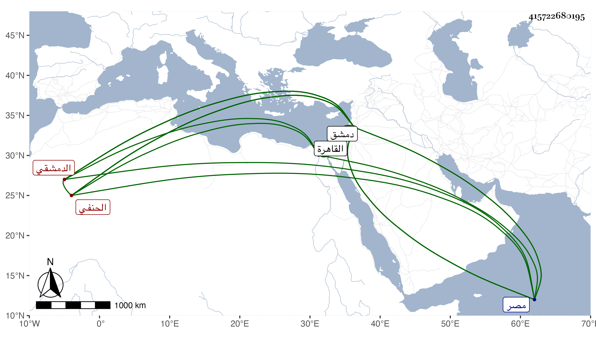

0902Sakhawi.DawLamic.ITO20230111-ara1.EIS1600.415722680195
Biography ID: 415722680195
25
علي بن محمد بن محمد بن أحمد الصدر أبو الحسن بن الأمير الدمشقي الحنفي ويعرف بابن الآدمي . ولد في سنة سبع أو ثمان وستين وسبعمائة بدمشق ونشأ بها وأحضر في الثالثة على ابن أميلة قطعة مجهولة الآخر من المائة المنتقاة من مشيخة الفخر انتقاء العلائي بل أسمع على الصلاح بن أبي عمر وغيره وقرأ على كتابه تعليق المختصرات ، وتفقه قليلا وتلا بالسبع على إسماعيل الكفتي ، وكتب الخط الحسن وقال الشعر الجيد المليح الرائق وترسل وناب في الحكم ثم باشر بدمشق كتابة سرها ونظر جيشها ثم قضاءها ، ثم لما قدم الخليفة المستعين بالله أبو الفضل العباسي من دمشق لمصر ولاه قضاء الحنيفة بها وجمع له في دولة المؤيد بين القضاء والحسبة وكان قد دخل معه القاهرة وهو فقير جدا بحيث أنه احتاج إلى نزر يسير للنفقة فاقترضه من بعض أصحابه ثم تمول جدا بحيث خلف من المال جملة مستكثرة ولما مد الله له العطاء وأسبغ عليه النعماء لم يقابلها بالشكر فإنه كان مسرفا على نفسه متجاهرا بما لا يليق بالفقهاء غير متصون ولا متعفف وقد أصيب مرارا وامتحن من أجل اختصاصه بالمؤيد . ذكره شيخنا في معجمه وقال : سمعت من نظمه وطارحته وكانت بيننا مودة قديمة وعليه نزلت بدمشق لما نزلتها ، وممن كتب عنه من شعره الحافظ ابن موسى المراكشي ورفيقه الأبي وأنشدنا عنه أشياء ، وهو في عقود المقريزي . مات بعلة الصرع القولنجي كأبيه في رمضان سنة ست عشرة عفا الله عنه وإيانا . قال شيخنا في إنبائه وكنت اقترحت عليه أن يعمل على نمط قولي :
| نسيمكم ينعشني والدجى | طال فمن لي بمجيء الصباح |
| ويا صباح الوجه فارقتكم | فشبت هما إذ فقدت الصباح |
فعمل ذلك في سنة سبع وتسعين وأنشدنيه عنه جماعة ثم لقيته فسمعته منه فقال :
| يا متهمي بالصبر كن منجدي | ولا تطل رفضي فإني عليل ... |
| أنت خليلي فبحق الهوى | كن لشجوني راحما يا خليل ... |
ولما ولي كتابة سر دمشق قال فيه الأديب الشمس محمد بن إبراهيم الدمشقي المزين :
| ولاية صدر الدين للسر كاتبا | لها في النفوس المطمئنة موقع |
| فإن يضعوا الأشيا إذا في محلها | فلا يك غير السر للصدر موضع |
وقال شيخنا :
| تهن بصدر الدين يا منصبا سما | وقل لعلاء الدين فليتأدبا |
| له شرف عال وبيت ومنصب | ولكن رأينا السر للصدر أنسبا |
وقال غيرهما :
| كتابة السر غدت | وجودها كالعدم |
| وأصبحت بين الورى | مصفوعة بالأدمي |
ونظمه سائر فلا نطيل بايراده .
